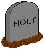
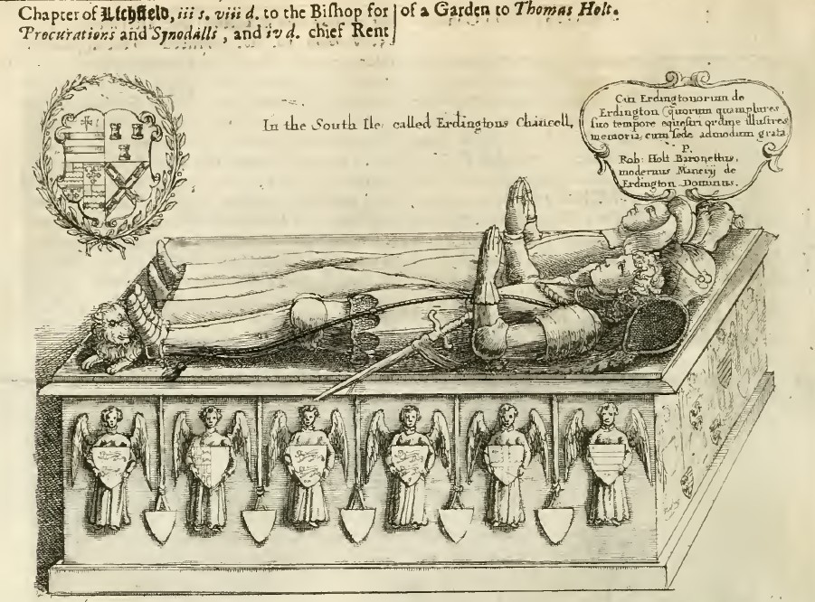
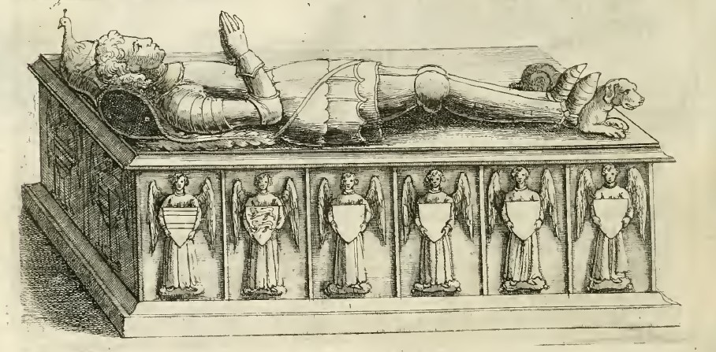

Monumental inscriptions connected to the Holt families are gathered here, preserving the stories carved into stone across generations. These memorials offer a glimpse into the lives, relationships, and histories of the Holts of Rochdale, Gristlehurst, Ashworth, and beyond. To search wider a field and find a grave of other Holt ancestors this website may help you find your own connections.
Legacy
Holt Burials and Monumental Inscriptions

and Sophia Holt
James Holt
and William Holt
Manchester Cathedral Burial Index
Probate Records in Lancashire and Cheshire Record Society Publications
Monumental Inscriptions
Rochdale Parish Church St. Chad's Memorial with the Latin inscription Jacobi Holte de Castleton. A translation is here.
Sir John Holt, Lord Chief Justice of England, descendant of the Holts of Gristlehurst, was born at Thame, Oxfordshire on 30th December 1642. He entered Oriel College, Oxford to study law at the age of sixteen years. He returned to study law at Gray's Inn in London and was appointed to the bar in 1663. He became King's sergeant and was knighted in 1685. In 1688 he took a prominent role in arranging the constitutional change by which William III was called to the throne of England, and after his accession he was appointed Lord Chief Justice of the King's Bench. Sir John Holt of Bedford Row, London died 5 March 1710 aged 68 and was buried in the chancel of St Mary's Church, Redgrave, Suffolk. A marble monument to Sir John Holt, by Thomas Green, stands in the Redgrave church.
A plaque is placed on the wall in Biddulph church in Staffordshire for George Holt, Esquire of Rochdale, Lancashire, a lineal descendant of the Holts of Ashworth and Gristlehurst. His remains are deposited in the vault of his brother, the vicar William Henry Holt of this parish. George Holt departed his life whilst on a visit at Knypersley, in the 60th year of his age, 26 Aug 1815.
St Peter and St Paul parish church is a church with a spire and contains an outstanding collection of grand tombs with recumbent effigies. Many tombs and effigies and many wall monuments. William Holte d. 1514 and his wife Joanna. There is a kneeler monument to Edward Holt d. 1592 and his wife Dorthye and a crying cherub with skulls from Thomas Holte momument. There is a barogue ornamental monument of Thomas Holte d. 1654. It has two pairs of cherubs, winged cherbus, 2 death heads, pots, drapery and beautifully carved flowers. The latin insciption shared he built Aston Hall and notes his great granson Charles Holte, Baronet. The is another monument for Charles Holte (Carolus Holte) Baronet d. 1722 errect by his wifw Anna (Clobery) detailing his contributions to medicine and justice. Also a plaque to Diana Holte d.1724 daughter of Sir Charels Holte Baronete and Dame Ann his wife. There is a black marble obelisk monumet for Sir Charles Holte Baronet, d. 1782 describing that his daughter was deprived of the patrimony of her ancesters by her uncle Sir Lister Holte Baronent in his will. A momument to Sir Lister Holte Baronet d.1770 and his third wife Sarah (Newton) d. 1794, erected by her sister Elizabeth Newton.
The Holtes from the Antiquities of Warwickshire illustrated by William Dugdale 1656.

